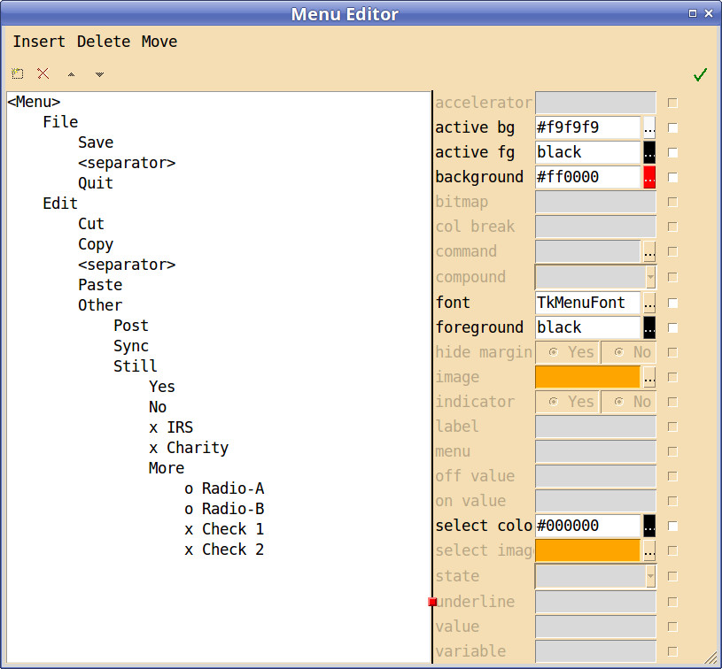
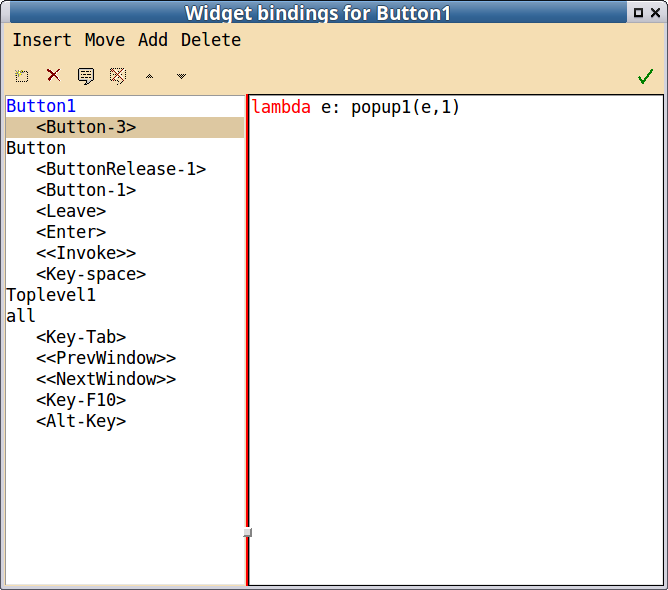

Menus¶
PAGE supports toplevel menubars and context menus often called popup menus. PAGE does not support menubuttons.
A popup menu is essentially a callback function bound to a selected widget. Of course, that binding is specified using the Bindings Window.
There is a Menu Editor which facilitates the creation and modification of all the menus for PAGE.
Creation of Menu Bars can be confusing because PAGE bridges Tcl and Python. Let me try to explain! When you create a toplevel window and populate it, you are actually building an interactive tcl program that will later be translated into Python modules. If you populated the toplevel widget with a button PAGE binds Button 1 in such a way that when you click on it, all kinds of magic occurs - the Attribute Editor opens for business, and menus may popup allowing you to cut and copy, specify bindings, etc. - you don’t actually invoke any callback you associated with the button.
With the menu bar, things are different, in that the menu does function in the tcl world. That is, if you specified a cascade sub menu, say File, in the menu bar, and then you click on File in the menu bar the cascade menu opens so you can see it. I think that is good because it allows you to see the structure of the menu bar as you create it. However, if you put in a command entry like Quit and tie it to the function “quit”, which you intend to implement in the Python world, and then in PAGE click on Quit in a menu, Tcl/Tk will attempt to execute “quit”. However, there is no tcl “quit” function defined in PAGE; therefore, you would get a Error window stating “invalid command name “quit”. To avoid this confusing Error message, I have change PAGE in version 4.8.9 to prepend a “#” to the actual command entered in the Menu Editor though it is not shown in the Menu Editor window, so that selecting a command in the menu bar a comment is invoked, i.e, nothing happens; it’s a comment. When the Python code is created, the “#” is. of course, removed. These modifications are in effect for menu commands newly specified or modified. Menus commands specified with earlier version can still give rise to the error. If you see such an error message, you may confidently select OK and continue working with PAGE or you can change the offending command entry - just one character will do as I did with the examples - and then continue.
The confusion does not occur with context (popup) menus because they are callback functions and, therefore, never visible in PAGE.
Menu Creation¶
The menu capability that I use most often is the menubar at the top of a top level window.
To create a menu bar, one invokes the Menu Editor in one of several ways:
- select the toplevel window and then select <click-to-edit> menu
field in the Attribute Editor,
right click in the Toplevel widget and select Widget->Edit Menu,
right click on the Toplevel widget in the Widget Tree and select Widget->Edit Menu.
As you edit the menu you will see the menu bar changes appear in the Toplevel Widget; you will not see any of the cascade menus appear.
To create a popup menu, one selects the Popupmenu widget in the Widget Toolbar and then click in the toplevel window. No widget will appear in the toplevel window, however a menu icon with the label “Menu: Popupmenu<n>” appears in the Widget Tree. Then right click on that Popupmenu widget icon in the Widget Tree and select Widget->Edit Menu. You can also select the Popupmenu widget and then the <click-to-edit> menu field in the Attribute Editor. No Popupmenu widget appears in the toplevel window because that would have no meaning. Popupmenu widgets have attributes such as colors, fonts and commands that can be modified in the Attribute Editor. As you edit the popup menu you will not see anything changes in PAGE windows. You can have more than one popup window and a popup window can be associated with more than one widget. The popup menus are called Popupmenu1, Popupmenu2, etc.; in turn, they are implemented in corresponding class functions called popup1, popup2, etc. These special names should be considered reserved for use by PAGE.
Note that while the Widget Tree shows menu bars as child widgets of a toplevel widget, context widgets are shown as child widgets of the root widget. The difference is because the context menus are associated with child widgets only by binding events, usually mouse buttons, to the widgets.
Menu Editor¶
The Menu Editor creates and modifies menus. It is invoked as above.
Some of the items in a menu may be simple commands like “Quit” which invokes your quit function. Others are cascade menus like File which are sub-menus of items like “New”, “Open”, “Save”, etc. To specify an action like the “Quit” example,
- Select the <Menu> item at the top of the left field.
- Insert->Command.
- Select the entry “New Command”.
- Go to the label entry on the right hand side of the editor and change the label to Quit and hit the enter key.
- Go to the command entry and enter the name of your quit command and hit the return key.
- You can change any of the options shown in the right window of the Menu Editor, like background color, font, etc.
- Images are added to the menu item by selecting the ellipsis to the right of the image option and using the file open dialog to select the image file.
- Use the arrow buttons or Move menu to move the selection up or down as desired.
To put in a cascade menu like File,
- Select the <Menu> item at the top of the left field.
- Insert->New Cascade.
- Go to the label entry on the right and Enter File.
- Use the arrow buttons or Move menu to move the selection up or down as desired.
To add Open to the File menu,
- Select File on the left.
- Insert->Command
- Select “New Command”
- Change its name as above.
- Specify the command as above.
- Move it up or down as desired.
Of course, you can add cascaded menus to cascaded menus, etc..
When you are all done hit the Check Button on the right.
The menu editing window is repeated below:
When adding entries to a cascade menu, that entry can be another cascade menu. See the reference to the example below.
When creating a menu, one can start by adding either commands which is most common case or a cascade menu which leads to a second level menu. Some of the Tcl/Tk documentation for menus bars say that one should only place cascade items in a menubar. However, I have found it useful and intuitive to have all kinds of items in the menu bar.
The Menu Editor allows one to change various colors of individual menu items as well as the fonts for individual items. Also one should be able to set preferences for default values of menu fonts and foreground and background colors. Preference processing does that. I have not allowed one to set preferences for active foreground or background values. The settings are in the Fonts and Colors tabs; in the main PAGE menu go to File->Preferences...->Fonts or File->Preferences...->Colors.
Points about adding images to menu entries:
- At this point Tkinter will only work with GIF, PNG, or PGM/PPM images from files. If for example, you have a jpeg you will have to convert it one of the acceptable formats.
- Also, when adding images to a menu and you have text as well, it is necessary to set the appropriate value in the compound attribute telling PAGE whether the image is to be on the left, right, top, bottom or center relative to the text. Again, while one can insert into the image entry field an image name, it is not recommended and the field has been colored orange as a warning.
- The menu.py example does not work as well under XP as it does under Linux Mint. Specifically, the image and label specified for the left button of the menubar are replaced with “(image)”. I rashly think this is a Tk bug.
menu.tcl is included in the examples subdirectory to illustrate some of the things that I have done to test the menu bar facility. Load it, generate the Python and execute it. I wrote the example to test the change in menu fonts and colors as well as having several images and several level of cascaded menus. I certainly do not advocate using weird images, colors and fonts all over the place. But you can.
I am uncertain about the best way to handle fonts in menus. PAGE now sets a variable that is used as the default menu font and that specification is forced everywhere in the menu that is not specified otherwise. However, once specified it is fixed. You cannot change it without re-specifying it everywhere it is used. I may revisit this issue.
The radio menu entry type has options “value” and “variable” which need attention. When a radio button is selected, the variable is set to value. That is, if variable is x and value is a then x is set to a, when the radio button is selected. The way the menu editor works is that when a radio entry is added to a menu, the label and value are set to “NewRadio” and the variable is set to “selectedButton”. If you wish to use the variable setting then you must change the variable to a different value, one you wish to use. PAGE will change create the correct Tkinter Variable Class of type string. It will also threat the value of the value field as a string constant. Change that field to a value that works with your application. Bare in mind that with radio entries in a menu they must all share a singe variable.
The Check menu entry type has options “onvalue”, “offvalue”, and “variable” much like radio entries. The main difference is that the check entry expects that each entry will have its own variable; they are not shared. Again, the PAGE implements the variables as StringVar objects and “onvalue” and “offvalue” as string constants. The variable stuff associated with menus can be bypassed by specifying distinct functions in the command options or by passing distinct parameters to the command function using the lambda function.
Menu Bar Modification¶
To modify a menubar, one needs to open the Menu Editor for the menu bar. That can be done several ways.
One way to open the Menu Editor is to select the Menu widget in the Widget Tree with Button-1 then select the <click-to-edit> field in the Attribute Editor window. The Attribute Editor can also be used to change the menu font, menu colors, etc.
Another way is to select the Menu Widget in the Widget Tree with Button-3. Then select Widget->Edit Menu....
Yet another way way is to select the Toplevel widget and then the <click-to-edit> field next to the menu label in the Attribute Editor.
Also, select the Toplevel widget in the Widget Tree with Button-3, then Widget->Edit Menu Bar.
Popup Menu Binding¶
The final topic to cover is the binding of popup menus to individual widgets. Popup menus are usually activated by mouse events bound to particular widgets. The Tk documentation discusses bindings of mouse events to widgets for different OS’s and PAGE attempts to follow those conventions. This is one of the above mentioned hacks. Note that a GUI may have more than one context menu and also more that one widget may be bound to a context menu. As an example of the latter, see Lib Demo, a photo album like example which displays a number of thumbnail images each of which can invoke the same popup menu.
PAGE implements the callback functions for popups as class methods of the toplevel class because these functions are generated by PAGE. Other callback functions are generated as skeletal functions in the support module. Callback functions for context menus and the menus themselves have special names. The context menus have PAGE generated names like Popupmenu1, Popupmenu2, etc. and the containing callback functions are popup1, popup2, etc. The latter names are reserved for pupup callback functions. This is part of the hack mentioned in the last paragraph. Since there is a close relation between the menu names and callback names, Popupmenu<n> and popup<n>, do not modify menu aliases.
The event object which is passed to the popup routine contains a lot of information regarding the event that opened the menu, see event object. However, there are times when you want to pass a parameter from the GUI through the popup menu to a callback routine in the support module. This is how. The def statement for a popup menu looks like:
def popup1(event, *args, **kwargs):
so using the bind menu, one can bind the Button-3 event to the popup menu with something like:
self.Button1.bind('<Button-3>', lambda e: self.popup1(e,1))
using the binding menu:
and set the command attribute in the popup menu to something like:
lambda:zzz(args[0])
The result is that when the widget Button1 is selected with <Button-3> the popup will appear and if the appropriate command is selected, then the function zzz will be called with the argument ‘1’. See Popup example ‘positional’.
If a popup menu is bound to a widget it is applicable for all subwidgets of that widget. So if you bind a popup menu to the toplevel widget and also bind another popup menu to a subwidget, say a button then hitting the popup button, Button-3 in Linux, both menus will popup.
Copy and Paste with Menus¶
Currently, copy and paste only works for Menu bars in the context of the Borrow function. So see Borrowing Widgets from Existing Projects for details.
I have not looked at copy and paste for popup menus.